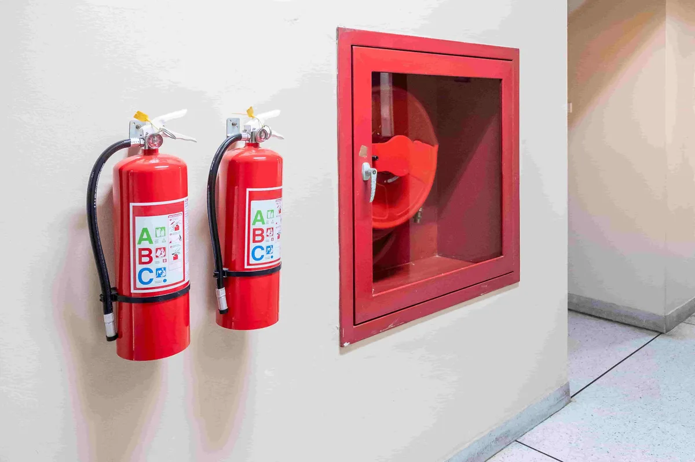

The fire safety equipment is not limited to just having an extinguisher fixed on a wall. Having the right type of housing for it, ensuring access to it, and other such elements are also extremely important. Here, we will look at why Fire Extinguisher Cabinets, Fire Hose Reels, kitchen suppression systems, and fire pump batteries are essential.
What Are Fire Extinguisher Cabinets and Why Does Every Building Need Them?
People usually concentrate on the correct fire extinguisher while neglecting the most important aspect, which is where and how to store it. Fire Extinguisher Cabinets are custom-designed storage units that aim to provide a safe environment for the fire extinguishers while allowing easy access in case of emergencies.
Why Fire Extinguisher Cabinets Are a Must-Have:
- Instant accessibility — Clearly visible and easy to open during an emergency, saving critical response time
- Protection from damage — Shields the extinguisher from accidental knocks, corrosion, and UV exposure
- Tamper prevention — Lockable or breakable-seal models prevent misuse or unauthorized access
- Code compliance — UAE Civil Defence guidelines recommend proper housing of extinguishers in public and commercial spaces
- Aesthetic integration — Recessed or surface-mounted cabinets blend into modern interiors without looking industrial
- Organized placement — Ensures extinguishers are always at the correct height and location as per safety norms
Types of Fire Extinguisher Cabinets:
- Surface-Mounted Cabinets — Fixed directly onto walls, ideal for corridors and open spaces
- Recessed Cabinets — Installed flush within the wall for a clean, seamless look — popular in hotels and offices
- Semi-Recessed Cabinets — A hybrid option that partially protrudes from the wall
- Outdoor Cabinets — Weather-resistant and UV-protected, designed for car parks, rooftops, and external areas
- Locked Glass-Front Cabinets — Provide visual inspection without opening, commonly used in high-traffic public areas
LockShield Cart supplies a comprehensive range of Fire Extinguisher Cabinets in various sizes, materials, and finishes — all sourced from certified manufacturers and suitable for UAE Civil Defence compliance.
Why Are Fire Hose Reels Critical for Large-Scale Fire Suppression?
When the fire exceeds the capability of a portable fire extinguisher, then fire hose reels are needed as the first choice. They are fixed at one place inside a building from where the fire is fought using constant water supply at the point of fire occurrence.
Key Features of Quality Fire Hose Reels:
- Fixed or swing-type mounting — Swing-arm reels allow 180° rotation for better reach across large areas
- High-pressure tolerance — Built to handle consistent water pressure without leaking or bursting
- Durable hose material — Reinforced rubber or thermoplastic hoses that resist heat and kinking
- Automatic shut-off valves — Prevent water flow until the hose is physically deployed
- Corrosion-resistant fittings — Brass or stainless steel components for long-term reliability
- Visible signage compliance — Must be clearly marked as per UAE fire safety standards
Fire Hose Reels vs. Fire Extinguishers — When to Use Which:
- Fire Hose Reels — Best for sustained water supply on larger or spreading fires in Class A scenarios
- Fire Extinguishers — Best for immediate, targeted suppression of small or contained fires
- Combined use — In large facilities, both systems work together for maximum coverage and control
LockShield Cart is a top Fire Hose Reels manufacturer in UAE. Our company ensures complete installation and commissioning of fire hose reels to make sure that your building can handle any kind of fire.
What Role Does a Fire Pump Battery Supplier Play in Your Fire Safety System?
The effectiveness of a fire suppression system depends on its power supply, which may not be available when there is a fire incident if you don’t have a backup power source for your fire pumps.
This is where a trusted Fire Pump Battery Supplier will play an important role. Having backup batteries will guarantee that your fire pumps work effectively despite power failures.
What to Expect from a Reliable Fire Pump Battery Supplier:
- Certified battery units compatible with major fire pump brands
- Deep-cycle, high-capacity batteries designed for sustained emergency operation
- Automatic charging systems that keep batteries at optimal charge at all times
- Regular maintenance and replacement schedules to avoid battery degradation
- UAE Civil Defence approved products that meet local and international standards
LockShield Cart works with trusted manufacturers to deliver dependable fire pump battery solutions — giving building owners and facility managers complete confidence in their fire systems.
Why Are Kitchen Suppression System Products Essential for Commercial Kitchens?
Kitchens are one of the most fire-prone areas in any structure. This is due to factors such as cooking oils, open flames, heat generation, and grease. Fire extinguishers alone are insufficient in such an area – and hence, Kitchen Suppression System Products have become necessary in commercial kitchen settings.
What Kitchen Suppression System Products Include:
- Wet chemical suppression agents — Specifically formulated to combat Class F cooking oil fires
- Automatic detection nozzles — Positioned above fryers, grills, and cooking surfaces for instant activation
- Manual pull stations — Allow kitchen staff to trigger suppression manually if needed
- Fuel shut-off mechanisms — Automatically cut gas or electricity supply when suppression activates
- Hood and duct protection — Suppresses fires within exhaust hoods and ductwork where grease accumulates
Who Needs Kitchen Suppression System Products:
- Restaurants and cloud kitchens
- Hotel kitchens and banquet facilities
- Hospital and healthcare canteens
- School and university cafeterias
- Industrial catering and food processing units
LockShield Cart supplies fully certified Kitchen Suppression System Products that meet UAE Civil Defence and NFPA 96 standards — protecting your kitchen staff, equipment, and premises from fire disasters.
How Does LockShield Cart Excel as a Complete Fire Safety Supplier in UAE?
Choosing a single trusted supplier for all fire safety needs saves time, ensures compatibility, and simplifies compliance.
Here is what makes LockShield Cart the preferred choice:
LockShield Cart Specialities:
- One-stop solution — Fire Extinguisher Cabinets, Fire Hose Reels, pump batteries, kitchen suppression, and more
- 100% certified products — Every item meets UAE Civil Defence, UL, CE, or equivalent international standards
- Expert team — Experienced safety professionals who guide clients from selection to installation
- Custom solutions — Tailored fire safety packages for different building types and risk levels
- Fast UAE-wide delivery — Prompt dispatch with careful handling across all emirates
- After-sales support — Maintenance contracts, annual inspections, and product servicing available
- Competitive pricing — Premium certified products at market-competitive rates
Frequently Asked Questions
Q1. Are Fire Extinguisher Cabinets mandatory in UAE buildings?
While the extinguisher itself is mandatory, UAE Civil Defence strongly recommends proper cabinet housing in commercial and public spaces to ensure accessibility, protection, and compliance. LockShield Cart supplies cabinets that meet all local requirements.
Q2. How far should Fire Hose Reels be spaced in a building?
As a general rule, Fire Hose Reels should be positioned so that every point in the building is within 36 metres of a reel, including the hose length. Exact spacing depends on building layout and UAE Civil Defence requirements.
Q3. How long do fire pump batteries last?
Most fire pump batteries have a service life of 3 to 5 years under normal conditions. As a certified Fire Pump Battery Supplier, LockShield Cart recommends annual testing and proactive replacement before end-of-life to avoid system failure.
Q4. Are Kitchen Suppression System Products required for small restaurants?
Yes. Any commercial kitchen operating with deep fryers or high-heat cooking equipment is required to have a certified suppression system under UAE Civil Defence regulations. LockShield Cart offers scalable Kitchen Suppression System Products for kitchens of all sizes.
Q5. Can LockShield Cart handle complete installation of fire hose reel systems?
Absolutely. LockShield Cart provides end-to-end services — from supply and installation of Fire Hose Reels to testing, commissioning, and ongoing maintenance under annual maintenance contracts.
Q6. What materials are Fire Extinguisher Cabinets available in?
LockShield Cart supplies cabinets in mild steel, stainless steel, aluminum, and fiberglass — with powder-coated or brushed finishes suitable for both indoor and outdoor environments.
Final Thoughts
Fire safety is a process that consists of many parts which all need to function perfectly in harmony. Whether you need your Fire Extinguisher Cabinets stored properly or Fire Hose Reels installed effectively, fire pump battery installations or Kitchen Suppression System Products, every product is essential for saving lives.
LockShield Cart is honored to have earned its reputation as a leading fire safety solutions provider in the UAE by providing our customers with high-quality products, unparalleled technical assistance, and even complete installation services.